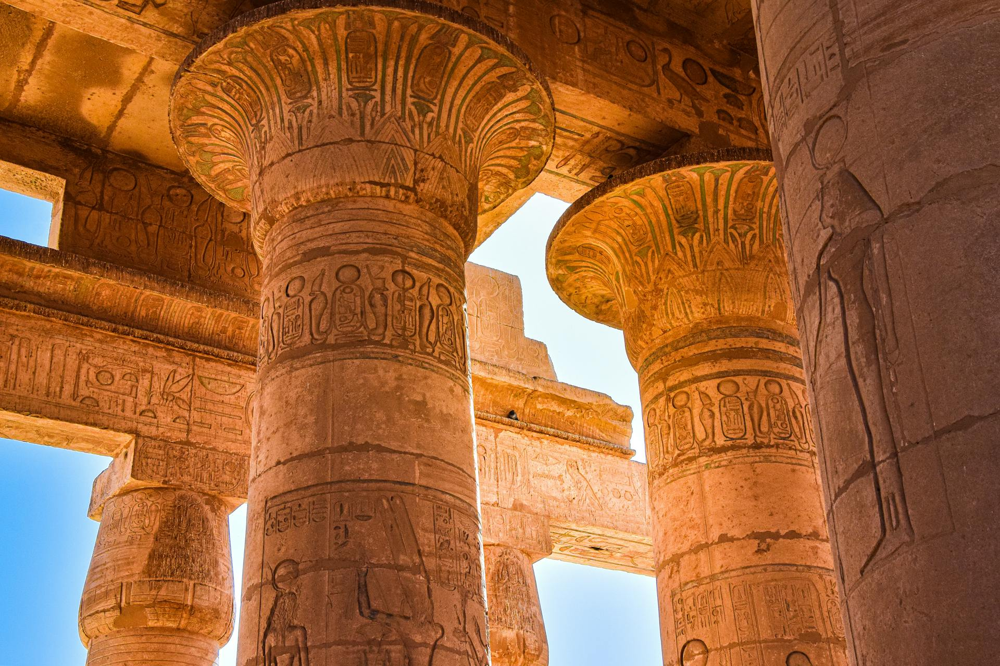
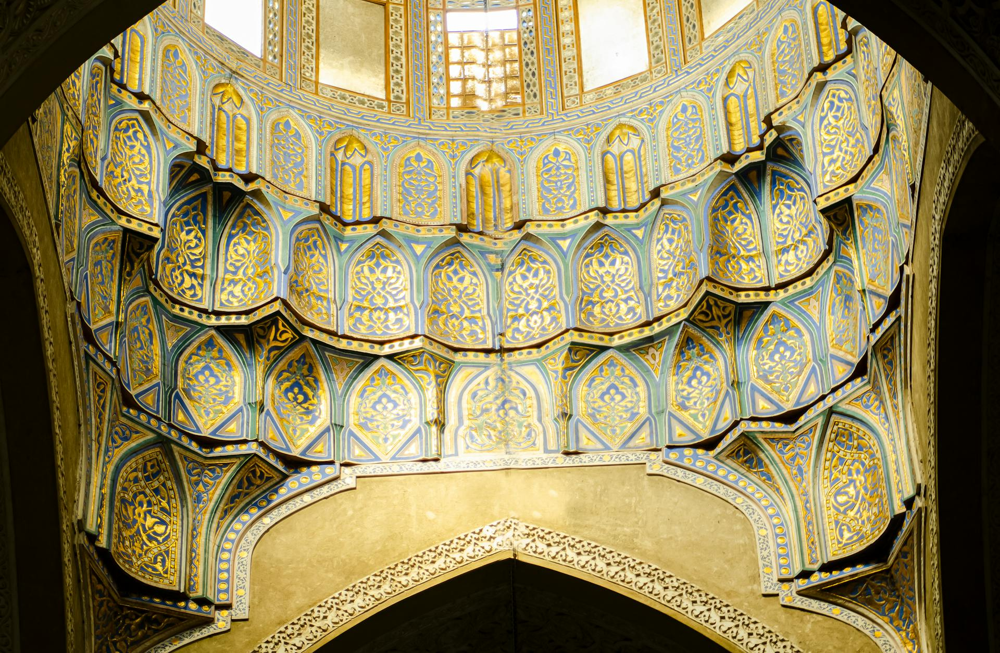
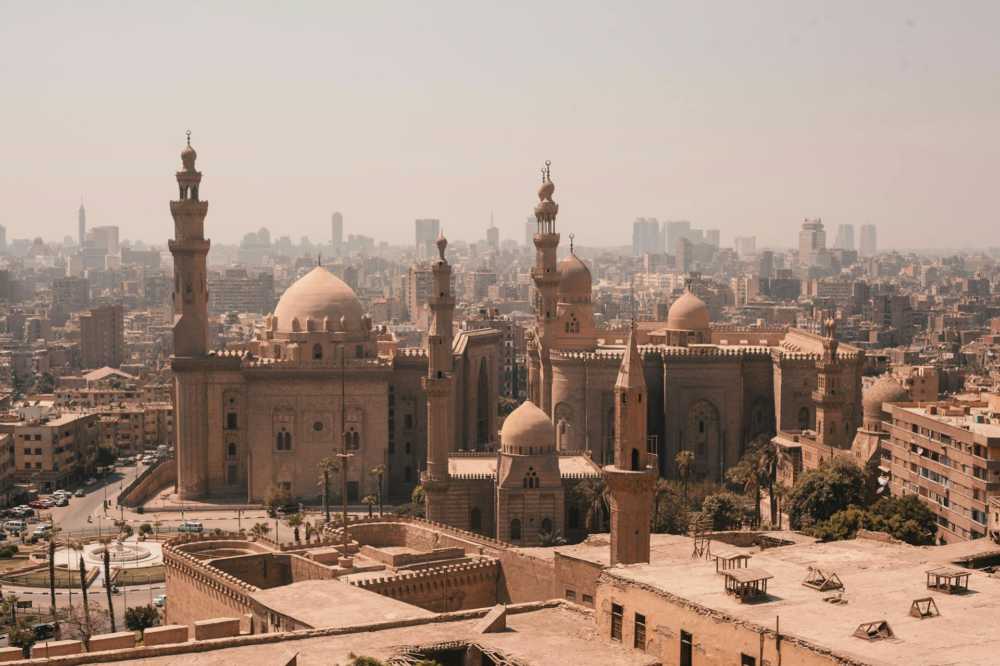
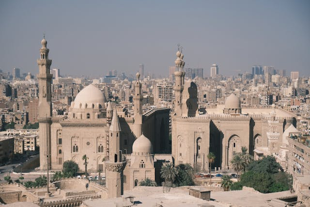

A arquitetura egípcia é uma lição de durabilidade. Eles dominavam a Cantaria (trabalho em pedra) muito antes de qualquer outra civilização.
O Período das Pirâmides e a Revolução de Imhotep
A jornada para as Pirâmides de Gizé começou em Saqqara. Antes de 2600 a.C., os nobres eram enterrados em Mastabas — estruturas baixas e retangulares. Foi o polímata Imhotep quem teve a ideia udaciosa de empilhar seis mastabas umas sobre as outras para o faraó Djoser, criando a primeira estrutura monumental de pedra do mundo.
• Estilos das Colunas: Os egípcios inventaram capitéis inspirados na flora do Nilo: estilos Papiriforme (papiro), Lotiforme (lótus) e Palmiforme (palmeira). Essas formas influenciaram diretamente a arquitetura grega posterior.
Após a conquista árabe no século VII, a arquitetura egípcia passou por uma metamorfose. A pedra continuou sendo o material nobre, mas o foco mudou da imortalidade física para a harmonia geométrica e espiritual.
• Mesquita de Ibn Tulun (879 d.C.): Inspirada na arquitetura de Samarra (Iraque), sua característica mais marcante é o minarete helicoidal (em espiral) externo. O uso de arcos apontados aqui ocorreu séculos antes de se tornarem populares nas catedrais góticas da Europa. Seu pátio central vasto foi desenhado para criar uma atmosfera de paz infinita, isolada do barulho da cidade.
• A Cidadela e a Mesquita de Alabastro (1830-1848): Embora a Cidadela de Saladino seja um forte medieval de 1176, a Mesquita de Muhammad Ali (Alabastro) que fica em seu topo segue o estilo Otomano. Suas cúpulas em cascata e minaretes extremamente esguios e altos foram projetados para que a silhueta do Cairo fosse reconhecida de qualquer ponto do horizonte, simbolizando a modernização do Egito no século XIX.
